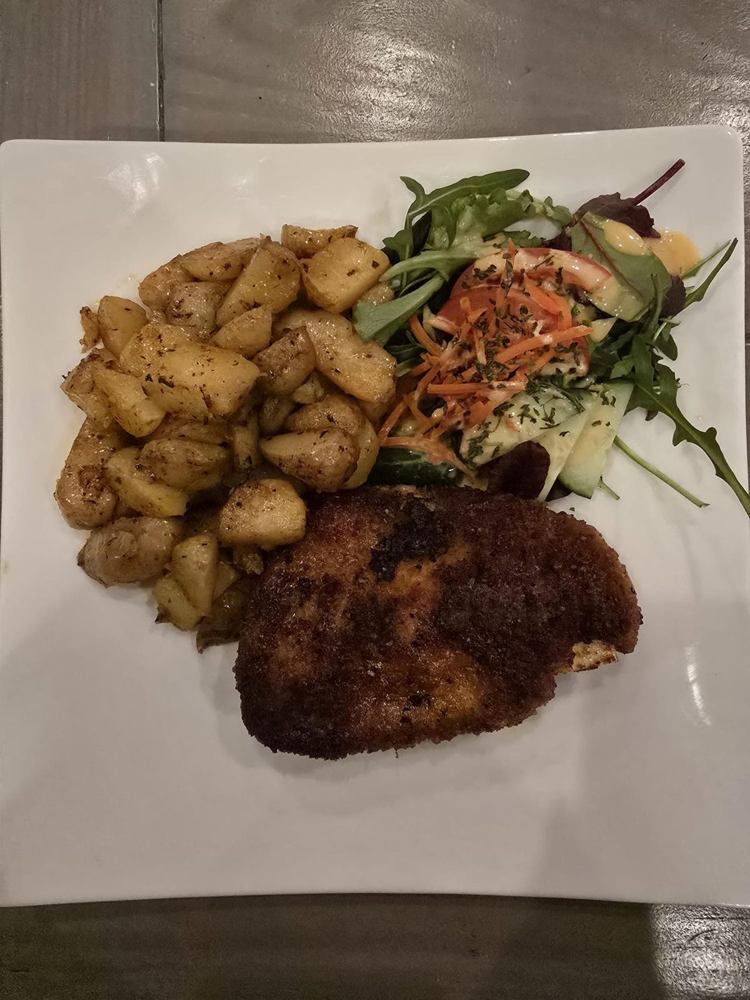
Maandschotel november
Cordon bleu
Met gebakken aardappels en salade.
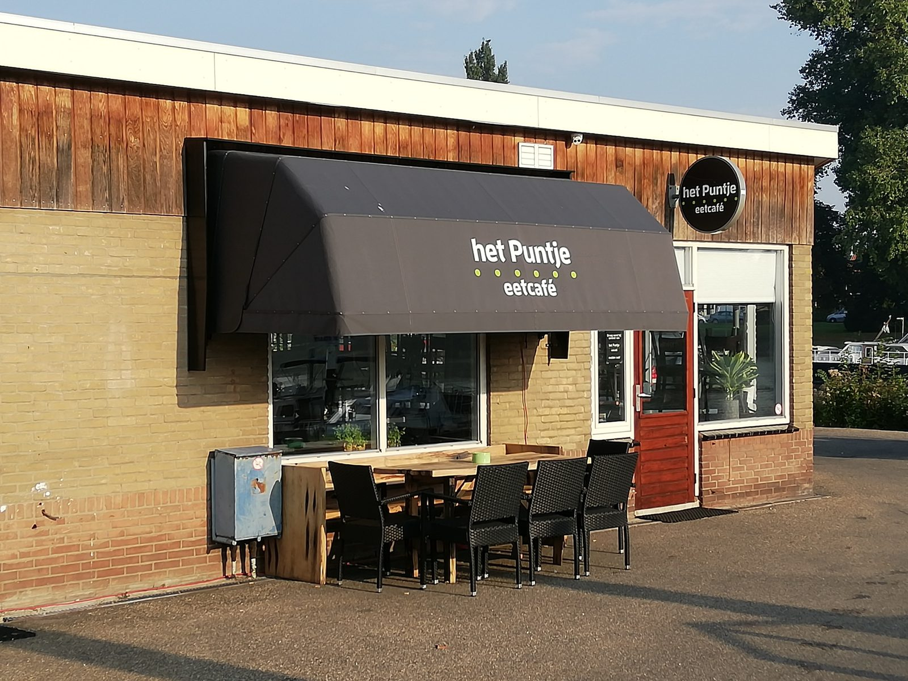
Ons eetcafé ligt in de jachthaven, met uitzicht op het Wantij. U komt bij ons voor een lunch, een snack, een schotel of een borrel.
Met de wisselende maandschotel en de wisseltap is er bij ons steeds iets nieuws te proeven.

Met gebakken aardappels en salade.
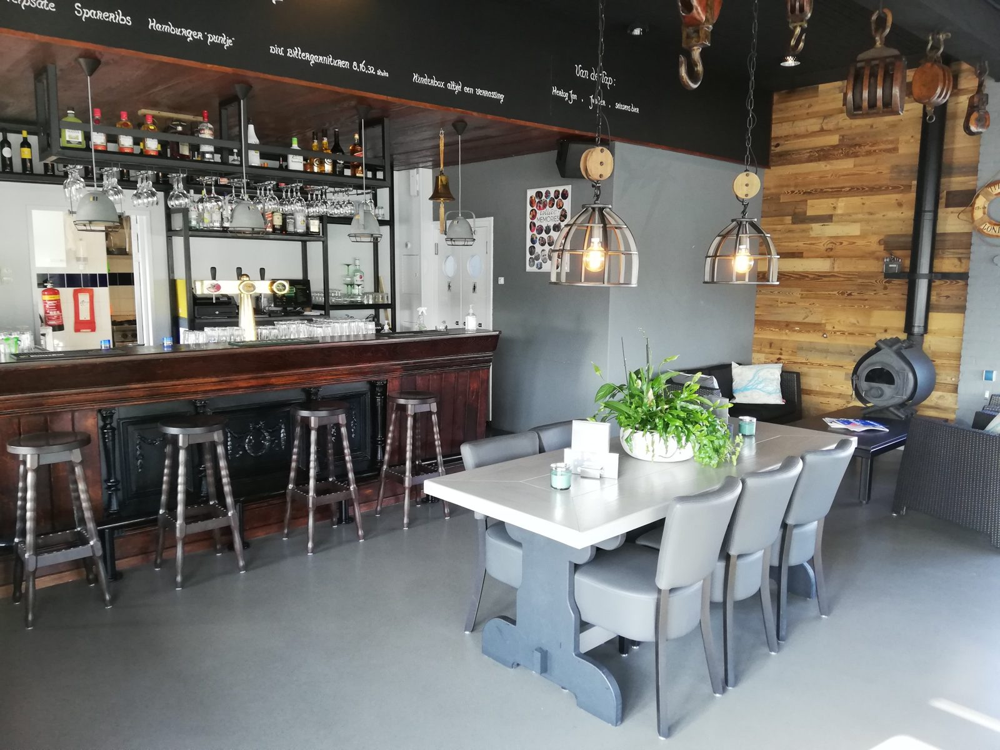
Naast Jupiler en Hertog Jan op de vaste tap.
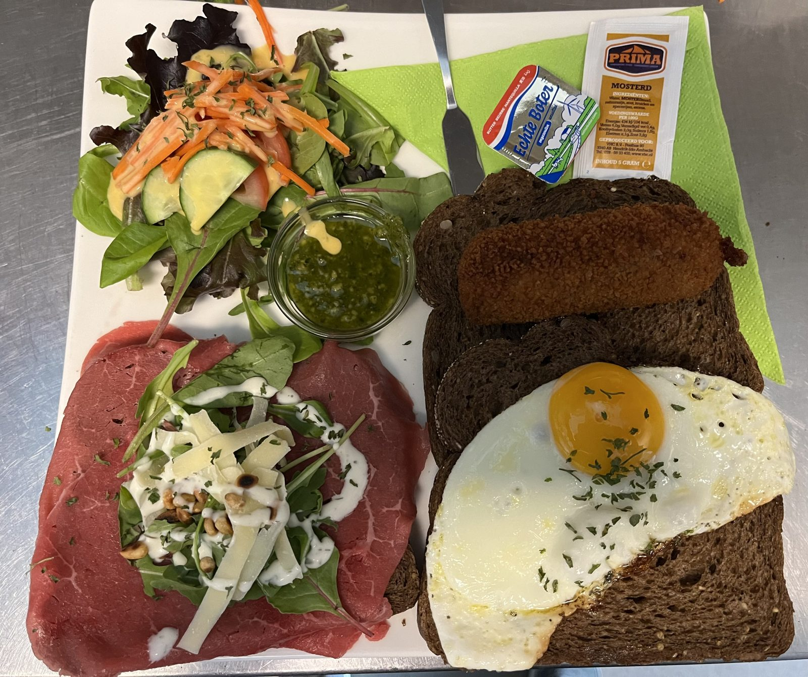
Te bestellen zolang we open zijn.
Alle snacks, lunch en gerechten van onze kaart bestelt u de hele dag. Ook 's middags een schotel, of 's avonds nog een uitsmijter.
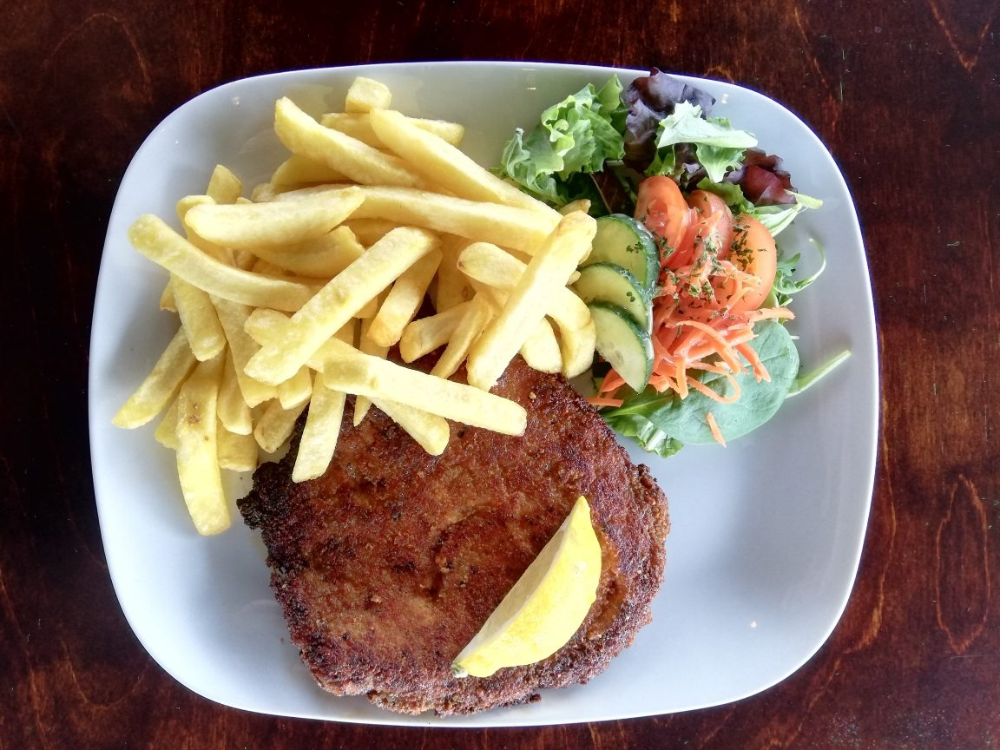
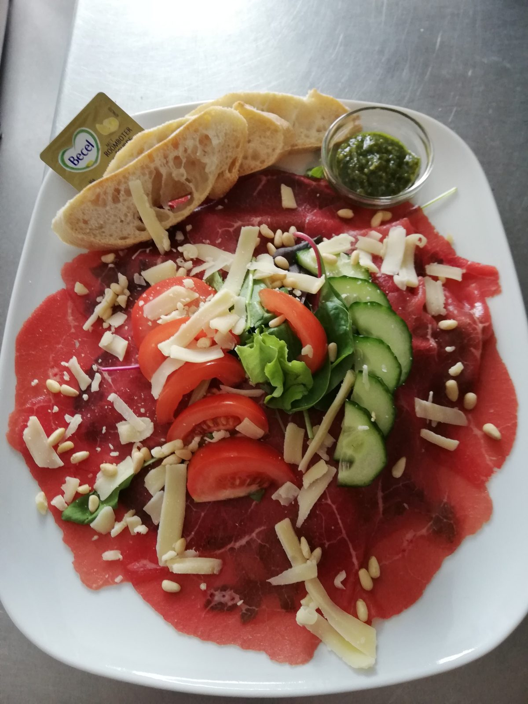
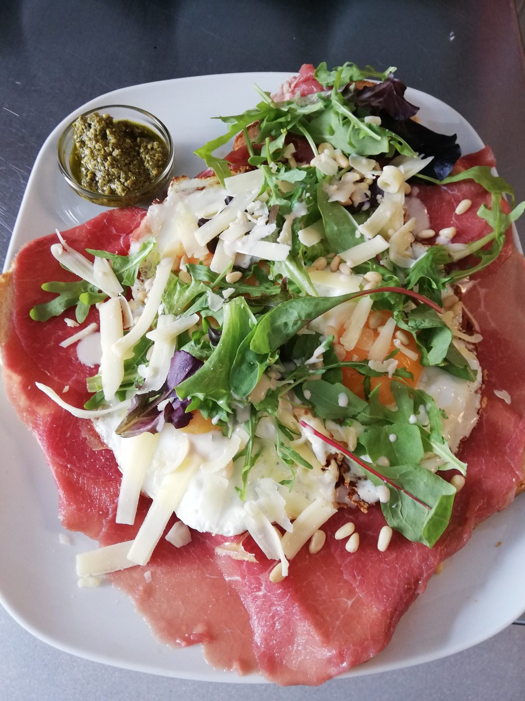
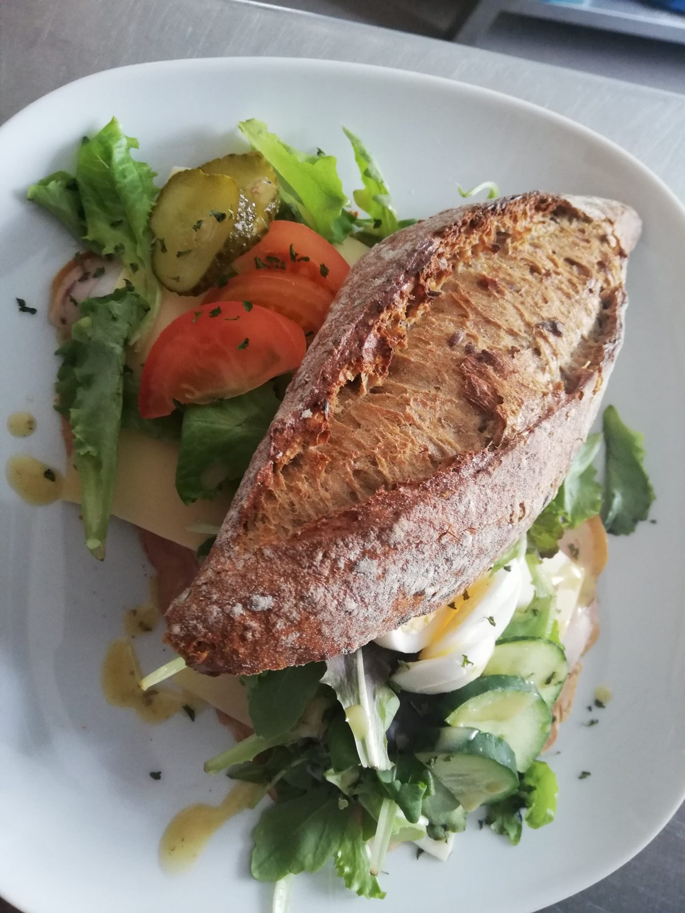
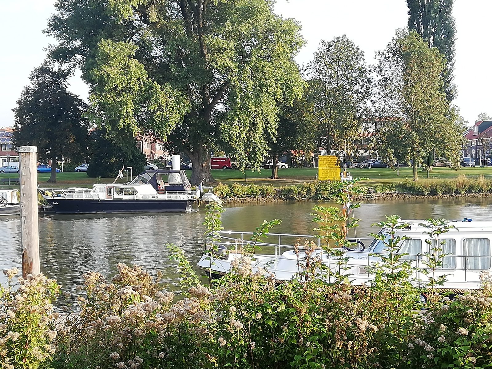
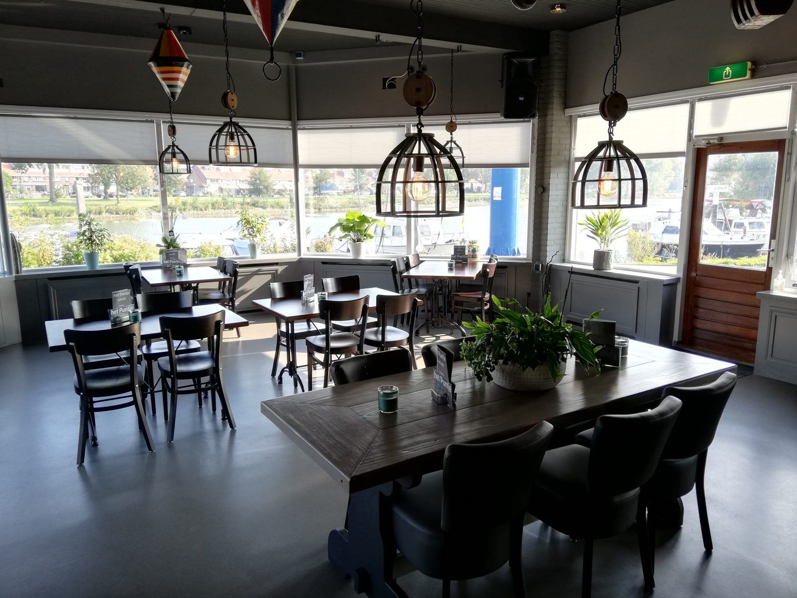
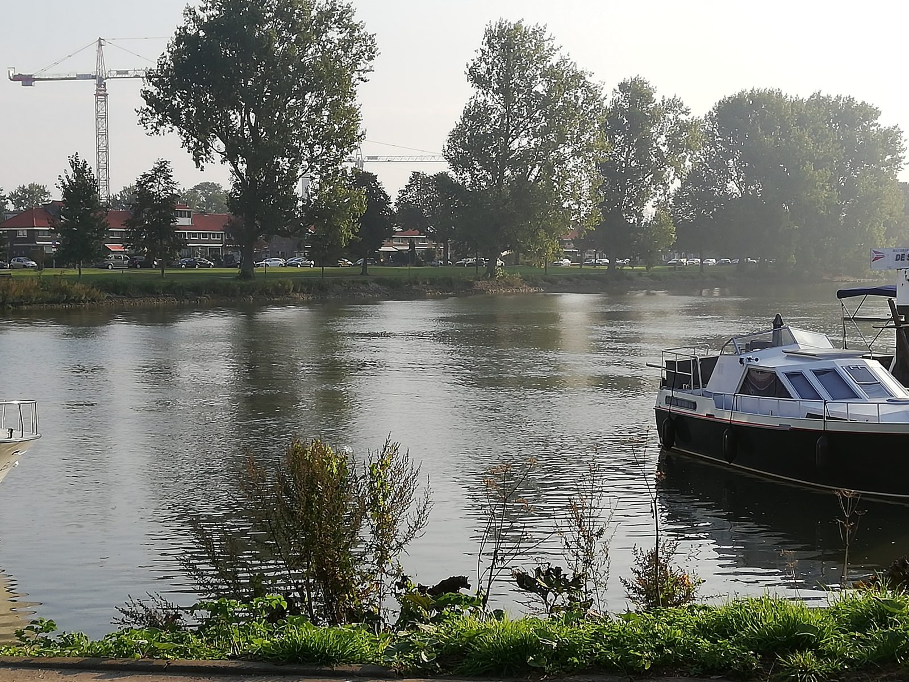
Het Puntje ligt direct aan het water, in een jachthaven van Dordrecht. Binnen kijkt u door de grote ramen naar buiten, en bij mooi weer zit u bij ons op het terras.
Of zoals een gast het schreef: "Verscholen in de jachthaven van Dordt, niet wetende dat het er zat maar hele leuke plek."
Reserveer een tafel"Een leuk aangekleed restaurant met uitzicht op het Wantij. Straks wanneer de boten in het water liggen kunnen er nog meer mensen buiten op het terras zitten. Goede en verrassende plek met vriendelijke bediening die nog een praatje maken. En niet te vergeten lekkere gerechten die heet opgediend worden."
"Het was heerlijk de gerechtjes, Verscholen in de jachthaven van Dordt, niet wetende dat het er zat maar hele leuke plek. Het is zeker voor herhaling vatbaar"
"super,lekker eten,alles zelf gemaakt..echt een aanrader."
"heerlijke vers gemaakte soep. en een lekker broodje met verse pesto"
"heerlijk gegeten, uitstekende bediening! goede prijs - kwaliteits verhouding!"
"Super leuk vriendelijke bediening leuke hond n het eten was heerlijk tot een volgende keer 👍"
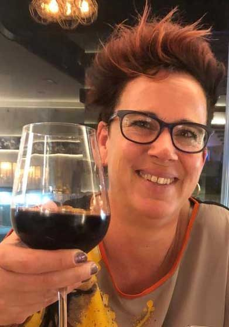
Bij het Puntje wordt u ontvangen door Wendy. Op de kaart vindt u ook haar eigen recept terug: de schotel met een bal.
Heeft u een allergie? Meld het ons, dan houden we daar rekening mee.
Bel ons of stuur een WhatsApp, dan houden we een tafel voor u vrij.
Wij horen graag wanneer u komt en met hoeveel personen.
Lekker eten aan het water, in de jachthaven van Dordrecht.